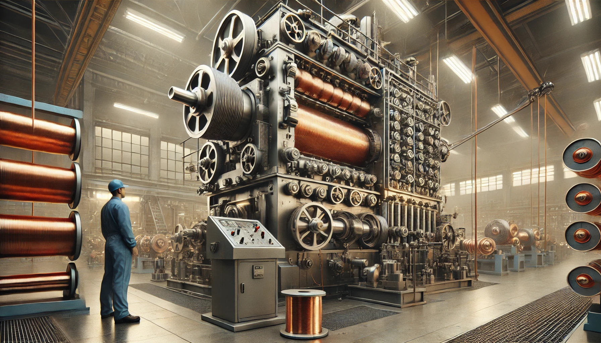

The Future of Automation in Engineering
Published: March 3, 2025

Automation continues to revolutionize industrial processes, from robotics to data-driven monitoring.
Engineers today rely on interconnected systems to boost efficiency and safety. Advances in sensors, AI, and robotics allow complex tasks to be executed with minimal human intervention. Staying updated on these technologies is crucial for professionals seeking to optimize production lines and reduce costs.
Below is a simple Python snippet illustrating how repetitive tasks can be automated:
The Future of Automation in Engineering
The Future of Automation in Engineering
Published: March 3, 2025
Automation continues to revolutionize industrial processes, from robotics to data-driven monitoring.
Engineers today rely on interconnected systems to boost efficiency and safety. Advances in sensors, AI,
and robotics allow complex tasks to be executed with minimal human intervention. Staying updated on these
technologies is crucial for professionals seeking to optimize production lines and reduce costs.
Below is a simple Python snippet illustrating how repetitive tasks can be automated:
import time
production_steps = ["check sensors", "start motors", "verify output"]
for step in production_steps:
print(f"Running {step}")
time.sleep(1)
Whether you work with manufacturing systems or software, understanding automation trends will shape the
next generation of engineering solutions.
Beyond immediate efficiency gains, automation opens new career paths for engineers willing to blend
coding skills with traditional know-how. From customizing PLC programs to integrating IoT sensors,
modern automation work is more collaborative and creative than ever.
In a recent project I helped retrofit an old production line with machine vision for quality
control. The upgrade not only cut down waste, but also provided real-time data for continuous
improvement.

Automation has become synonymous with efficiency. By offloading repetitive tasks to machines and software, engineers can devote more time to solving higher level problems. Modern PLCs and robotic systems handle complex operations with minimal downtime, allowing entire lines to operate 24/7. Industries from automotive to pharmaceuticals have embraced automation not only to increase production but also to ensure consistent quality. As organizations grow, the ability to scale through automation is often what separates industry leaders from those struggling to keep up.
Still, implementing automation can present challenges. Legacy equipment may not integrate smoothly with newer control systems. Additionally, the upfront cost of sensors, data acquisition modules, and training can be substantial. Planning carefully and evaluating return on investment is critical before undertaking a major overhaul. In my experience, incremental upgrades—such as installing machine vision for inspection—yield immediate benefits while paving the way for more ambitious projects.
A key advantage of today's automation ecosystem is the vast amount of data generated. Engineers can collect detailed metrics on everything from machine temperature to cycle time, enabling predictive maintenance and advanced analytics. Cloud-based dashboards reveal trends that were previously hidden, empowering teams to make data-driven decisions. The combination of IoT devices and machine learning algorithms can even predict failures before they occur, keeping downtime to an absolute minimum.
Consider a packaging plant I consulted for last year. The facility struggled with inconsistent output due to manual checks at various stages. We introduced conveyor sensors and a simple Python-based monitoring script that flagged irregularities in real time. After six months, the plant reported a 15% increase in throughput and significantly fewer defective packages. This example highlights how even small automation steps can transform operations and deliver measurable results.
If you're looking to begin your own automation journey, start by mapping out existing workflows. Identify pain points where manual intervention slows things down. From there, research affordable microcontrollers or open-source software that could handle basic tasks. Over time, you can layer more sophisticated solutions—such as collaborative robots or digital twins—without having to replace everything at once.
Automation ultimately revolves around people. Skilled engineers must configure and maintain these systems, and frontline workers need training to interact safely with machines. Clear communication between teams ensures that new technology supports rather than replaces their expertise. Companies that focus on reskilling employees often see greater adoption and long-term success.
For readers eager to dive deeper, I've compiled a list of resources covering popular automation platforms, programming languages, and industry standards. Click the button below to reveal the links.
Whether you are an experienced engineer or just beginning to explore automation, staying curious and experimenting with new tools will keep you ahead of the curve. Innovation moves quickly, and those who continuously learn will find no shortage of opportunities in this exciting field.
Another exciting area is the integration of artificial intelligence with automation. Machine learning models can analyze sensor data in real time, adjusting parameters to keep processes running smoothly. This blend of AI and automation enables self-optimizing systems that learn from every cycle. When implemented correctly, such solutions lead to minimal waste and maximum uptime.
Sustainability is also a driving factor. Automated energy management systems track electricity usage and can shut down idle machines, reducing overall consumption. Engineers who specialize in eco-friendly automation find themselves at the forefront of corporate initiatives to reduce carbon footprints.
Remote monitoring has become essential, especially for global operations. Cloud-connected controllers let teams visualize performance metrics from anywhere in the world. This empowers managers to make informed decisions without waiting for onsite reports.
For those who prefer open-source tools, platforms like Node-RED and Home Assistant offer modular components that are easy to customize. These frameworks encourage experimentation and are supported by vibrant communities.
Ultimately, the journey toward full automation is incremental. Start small, celebrate each improvement, and continue refining your processes. With curiosity and dedication, you can transform even the most traditional operations into efficient, data-driven powerhouses.
Looking ahead, experts predict that digital twins will be central to the next wave of automation. These virtual replicas of physical processes allow engineers to simulate changes before applying them on the shop floor. By running thousands of scenarios in software, teams can identify the most efficient settings without risking downtime.
Cybersecurity should also remain top of mind. As factories and utilities connect to the cloud, protecting industrial networks from intrusion becomes paramount. Implementing strong authentication, network segmentation, and regular security audits keeps systems safe and reliable.
Finally, remember that automation is a continuous journey rather than a one-time project. As new technologies emerge, revisit your setup and ask how they can enhance productivity or safety. The willingness to iterate is what propels modern engineering forward.
An often overlooked benefit of automation is improved workplace safety. By delegating hazardous or repetitive tasks to machines, companies greatly reduce the risk of injury. Automated lifting equipment, for instance, prevents strains and accidents that were once common on factory floors. When paired with real-time monitoring, safety systems can detect anomalies—such as overheating motors or unexpected vibrations—and shut equipment down before damage occurs. Investing in these safeguards not only protects personnel but also saves money by avoiding costly downtime and insurance claims.
Organizations often see cultural shifts after embracing automation. Teams learn to collaborate across disciplines, blending programming, mechanical design, and data science. This cross-functional approach sparks innovation, as ideas from one field inspire creative solutions in another. Open communication and continuous training help everyone stay on the same page as processes evolve.
With each automation milestone, remember to document lessons learned and share them with peers. Collective knowledge accelerates progress and ensures that future projects build on a solid foundation.
Automation is a journey worth pursuing.
Whether you work with manufacturing systems or software, understanding automation trends will shape the next generation of engineering solutions.
Beyond immediate efficiency gains, automation opens new career paths for engineers willing to blend coding skills with traditional know-how. From customizing PLC programs to integrating IoT sensors, modern automation work is more collaborative and creative than ever.
In a recent project I helped retrofit an old production line with machine vision for quality control. The upgrade not only cut down waste, but also provided real-time data for continuous improvement.
A Brief History of Automation
Automation has evolved from the simple mechanical devices of the early Industrial Revolution to the complex cyber-physical systems we see today...
Integrating IoT and Data Analytics
The Internet of Things (IoT) has expanded what automation can accomplish...
Case Study: Retrofitting Legacy Equipment
Not every company can replace old machinery overnight...
Challenges on the Road to Full Automation
While the benefits of automation are significant, there are hurdles as well...
Best Practices for Modern Engineers
Whether you're designing a new production line or updating an existing one...
Learning Resources
If you're eager to deepen your knowledge...
Take the Next Step
Automation is transforming industries across the globe...
Future Trends
Looking ahead, automation will integrate more deeply with artificial intelligence...
Get Involved
If this overview has sparked your interest...
Did you enjoy this article?
Conclusion
The journey toward full automation is a marathon rather than a sprint...
Thank you for exploring these ideas with me. I hope they spark your curiosity...
Happy automating!
Let's build the future together.